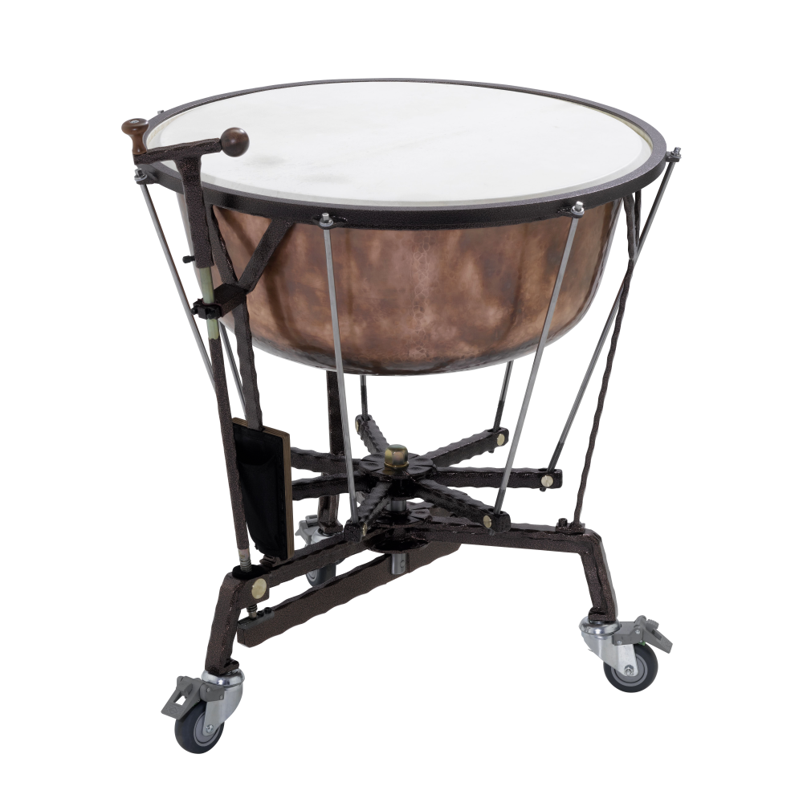
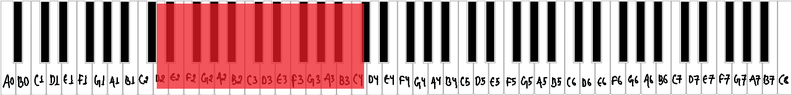
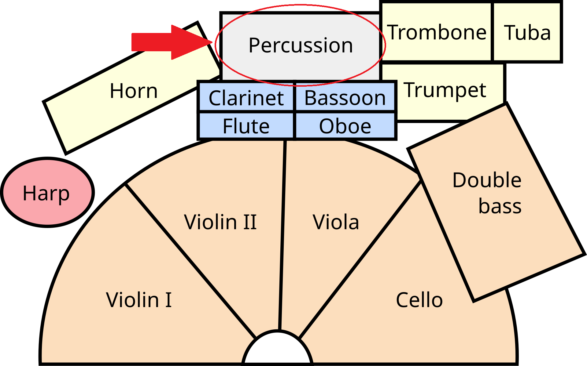
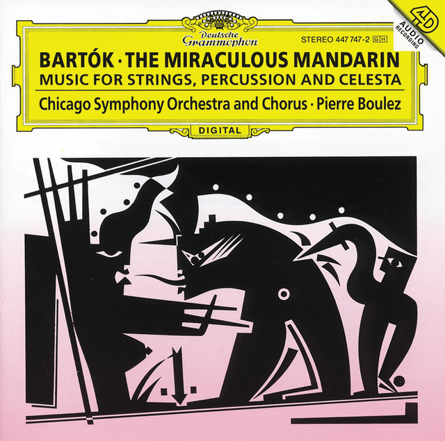

What are timpani?
Timpani, also called kettledrums, are large copper bowls covered with a drumhead. Unlike most drums they can play specific pitches. A foot pedal changes the tension of the head, which raises or lowers the note, and the player strikes the head with felt-tipped sticks. [1]

Musical range and clef
A standard set of four drums covers roughly D2 to C4. Each drum can only play a limited span of about a fifth, so the player retunes between and during pieces. [2]
Timpani are written in the bass clef, since the notes are low. Composers usually write only the notes the drums are tuned to. [3]

Where are the timpani seated in an orchestra?
The percussion section is at the very back of the orchestra, behind the brass, often along the back or right side of the stage. Exact placement changes with the piece and the hall. The timpani sit at the back, usually in the center or to the right behind the brass, and the timpanist often stands or sits on a raised platform. [4]

Popular songs/pieces that feature the instrument:
Symphony No. 4

The Miraculous Mandarin
References
- Wikipedia, "Timpani".
- Wikipedia, "Timpani".
- Wikipedia, "Timpani".
- Rockford Symphony Orchestra, "Are all orchestras arranged on stage the same way?".